Verschleiß und Toleranzen (125er ab 1998)
Einleitung
Die Angaben stammen aus einer Werkstattanleitung für 2011 WRE und SM.
Kupplung
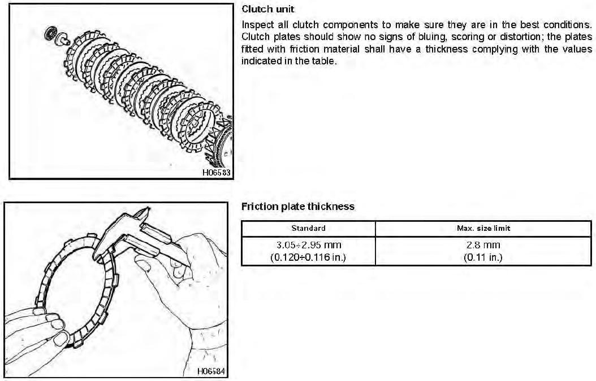 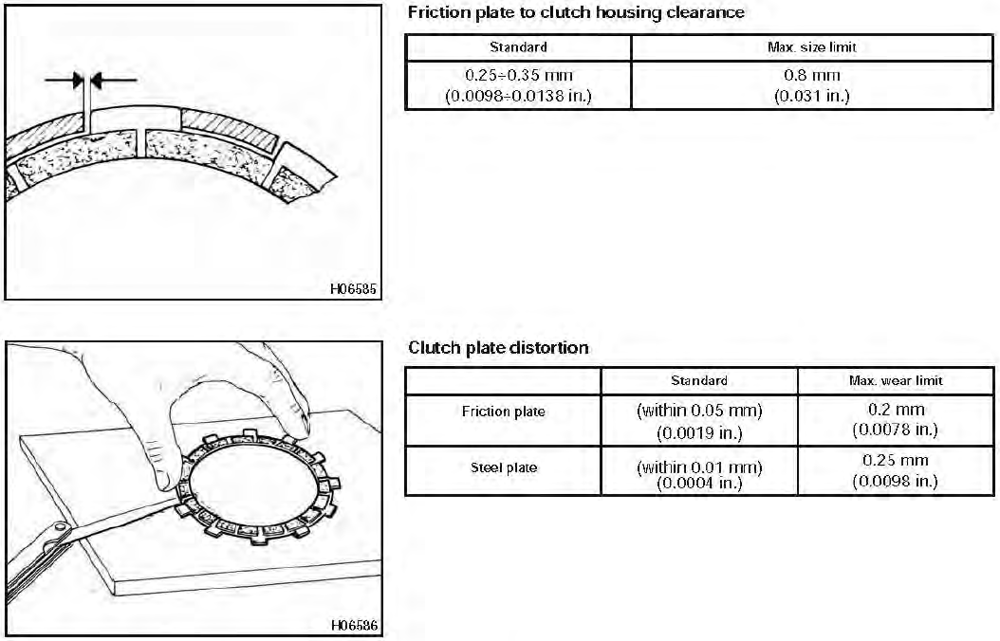 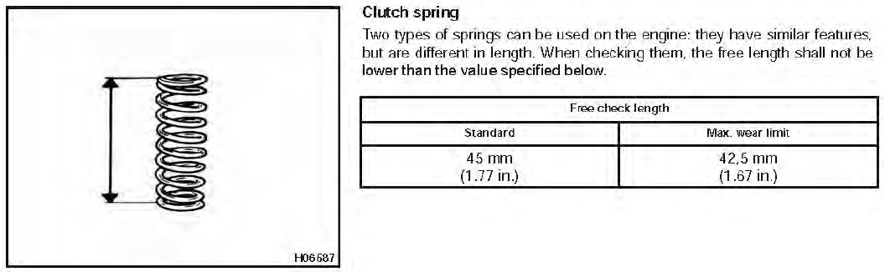Schaltung
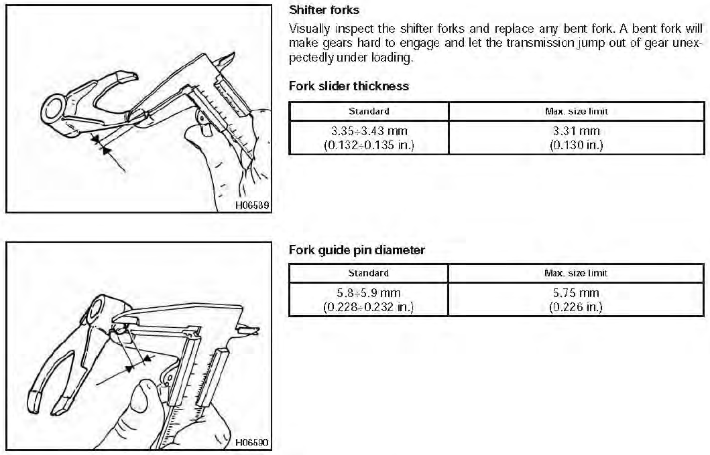 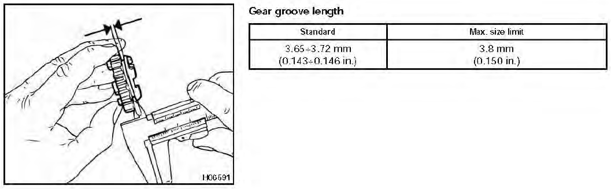 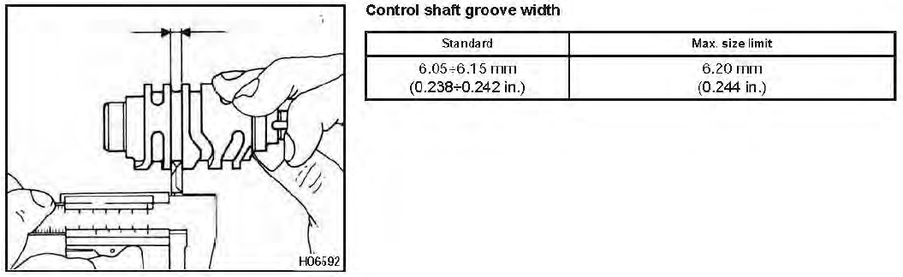Kurbelwelle
Es gibt zwei Möglichkeiten, das untere Pleuellager ungefähr ohne Messuhren zu überprüfen. Die erste ist, im eingebautem Motor ohne Zylinder und Kolben zu erfühlen, ob Höhenspiel vorhanden ist. Wenn dieses selbst mit der Hand erfühlbar ist, ist das Lager definitiv verschlissen.
Die zweite Möglichkeit ist, die ausgebaute Kurbelwelle mit einer Hand am Pleuel fest zu greifen und in der Luft zu halten. Dann wird mit dem Handballen der anderen Hand auf das Pleul geschlagen und dabei gehorcht. Ist ein helles klirren zu hören, deutet dieses auf Verschleiß hin. Ist das Geräusch jedoch sehr stumpf, deutet es auf ein intaktes Lager hin.
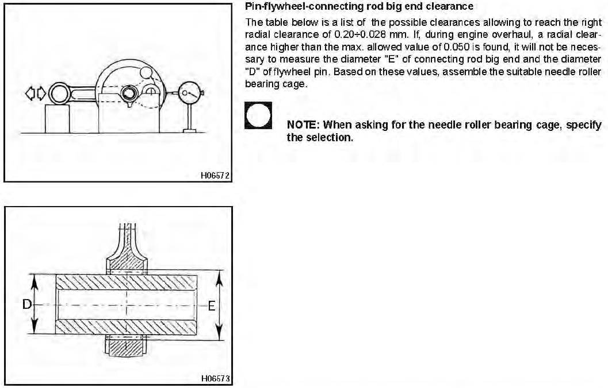
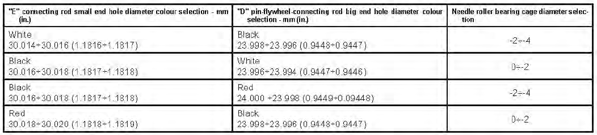
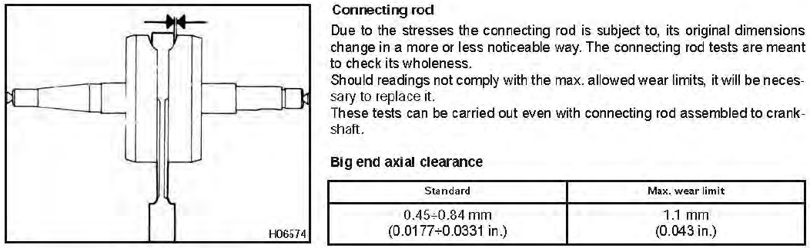
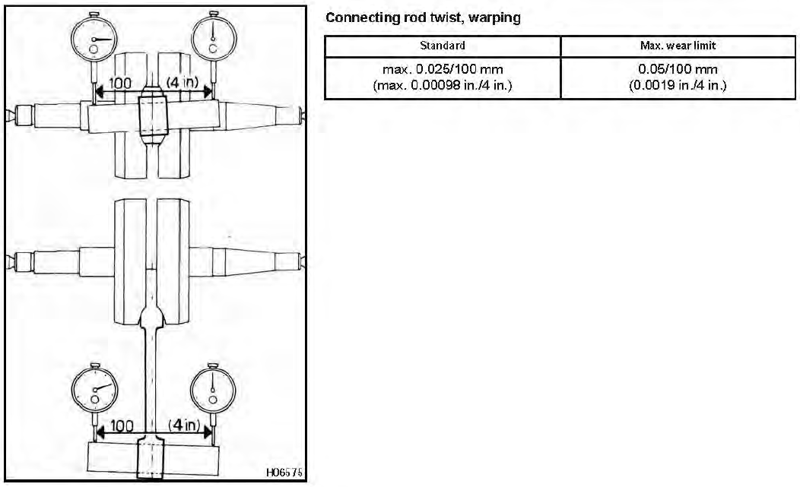
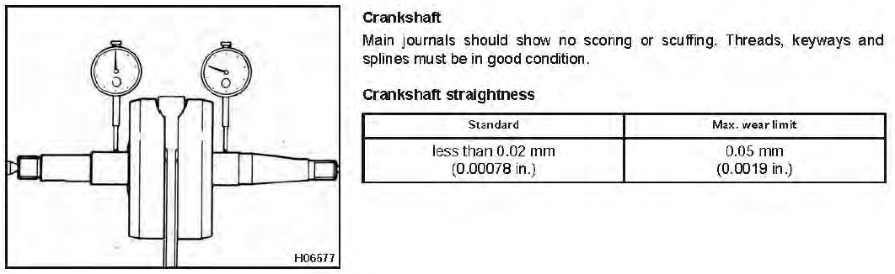
Zylinder
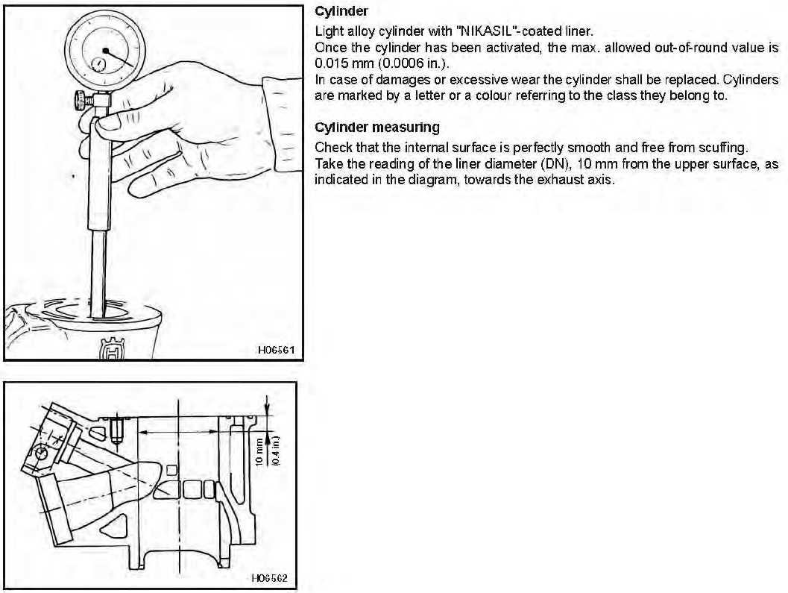Eine einfache Möglichkeit die Quetschkante zu überprüfen, ist durch das Loch der Zündkerze Lötzinn in den Zylinder bis zum Rand zu schieben und dann mehr mals zu kicken. Danach kann mit einem Messschieber einfach der gequetschte Lötzinn vermessen werden. 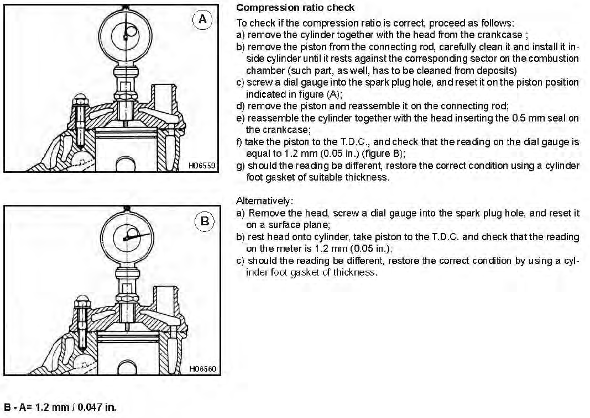